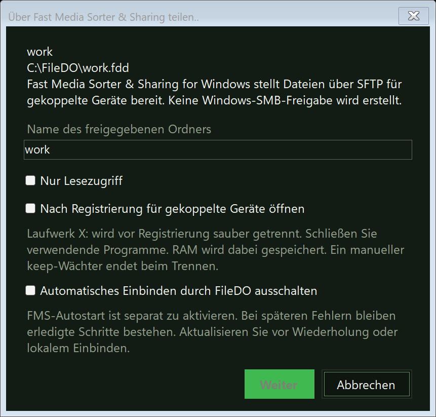

Ein FileDO-Datenträger auf dem Handy: Freigabe über Fast Media Sorter & Sharing
FileDO kann einen virtuellen .fdd-Datenträger für Ihre gekoppelten Handys und Tablets bereitstellen - nicht selbst, sondern über Fast Media Sorter & Sharing for Windows: Sie registrieren den Datenträger in der Datenträgerverwaltung, und dieses Programm liefert seine Dateien per SFTP an die mit ihm gekoppelten Geräte aus. FileDO selbst öffnet dafür keine Netzwerkverbindung - es spricht über eine lokale Pipe auf diesem Computer mit jenem Programm. Unten: was Sie zuerst brauchen, wie Sie einen Datenträger freigeben, was die Handys sehen und was zu tun ist, wenn der Dialog meldet, die Freigabe sei nicht verfügbar. Die Datenträger selbst behandelt die Anleitung zu virtuellen Datenträgern.
1. Was Sie zuerst brauchen
Drei Dinge: den Desktop-Build von FileDO, Fast Media Sorter & Sharing for Windows mit aktivierter optionaler FileDO-Datenträger-Komponente und mindestens ein damit gekoppeltes Gerät.
FileDO, der Desktop-Build
Der Datenträger muss in der Datenträgerverwaltung als dateibasierter .fdd-Container registriert sein. Der Microsoft-Store-Build kann keine Datenträger einbinden, dieser Ablauf ist dort gesperrt - nutzen Sie den Desktop-Build. Wie Sie ihn installieren und was das Installationsprogramm schreibt, steht in der Installationsanleitung.
Fast Media Sorter & Sharing for Windows
Das Programm, das die Dateien über das Netzwerk ausliefert. Aktivieren Sie bei seiner Einrichtung die optionale FileDO-Datenträger-Komponente - ohne sie ist die Datenträgerfreigabe nicht verfügbar. Sein Desktop-Installer ist nicht signiert, daher zeigt Windows möglicherweise dieselbe Warnung wie bei FileDO - diese Warnung wird hier erklärt. Die Installationsseite ist serzhyale.github.io/FastMediaSorter_Lite.
Gekoppelte Geräte
Handys und Tablets werden in dessen Share Manager mit dem Programm gekoppelt - genauso wie bei gewöhnlichen freigegebenen Ordnern. Ein Gerät, das Sie nicht gekoppelt haben, sieht den Datenträger nicht. Für das Handy ist ein freigegebener Datenträger einfach ein weiterer Ordner, keine eigene Technik.
2. Einen Datenträger aus der Datenträgerverwaltung freigeben
Share Manager starten. Fast Media Sorter & Sharing hält den freigegebenen Datenträger, daher muss sein Share Manager laufen, bevor FileDO einen Datenträger anbieten kann. Antwortet sein Worker nicht, bietet FileDO eine erneute Prüfung an - ein nicht erreichbarer Worker beweist nicht, dass das Programm fehlt.
Datenträger und Aktion wählen. Wählen Sie in der Datenträgerverwaltung einen registrierten dateibasierten Datenträger und im Detailbereich oder im Menü „Weitere Aktionen“ den Eintrag Über Fast Media Sorter & Sharing teilen.. (Ctrl+Shift+S).
Die Registrierungsoptionen prüfen. Der Ordnername ist das, was gekoppelte Geräte sehen; der Zugriff ist standardmäßig lesend und schreibend, Sie können Nur Lesezugriff ankreuzen, und ein versiegelter Datenträger bleibt schreibgeschützt. Auf Wunsch öffnen Sie den Datenträger gleich. Ist der Datenträger lokal eingebunden, trennt FileDO ihn nach Ihrer Bestätigung sauber; ist das automatische Einbinden durch FileDO eingeschaltet, gehört Ihre Zustimmung zum Abschalten zwingend zur Übergabe.
Die Bestätigung lesen. Sie fasst zusammen, was gleich geschieht: das lokale Einbinden wird abgeschaltet, und jenes Programm liefert die Dateien des geöffneten Datenträgers über das Netzwerk aus. Ein verschlüsselter Datenträger fragt hier einmal nach seinem Passwort - auf diesem Computer.
Später schließen oder beenden.Freigabe schließen behält die Registrierung - der Datenträger lässt sich in einem Schritt wieder öffnen. Freigabe beenden entfernt die Registrierung und den gespeicherten FMS-Autostart-Schlüssel.

Einen Datenträger in der Datenträgerverwaltung registrieren. Das Passwort eines verschlüsselten Datenträgers wird auf diesem Computer eingegeben und gelangt nie zum Handy.
Der Autostart ist eine eigene Zustimmung je Datenträger: Nach einem Neustart öffnet das Programm den freigegebenen verschlüsselten Datenträger selbst, ohne dass jemand das Passwort eingibt; dafür fragt es einmal nach dem Passwort und erklärt, was sich ändert. Von der Befehlszeile erledigt vd share dieselben Schritte - Abschnitt 3.
3. Dasselbe von der Befehlszeile
vd share work.fdd on registriert den Datenträger, vd share work.fdd off beendet die Freigabe, vd open und vd close öffnen und schließen ihn für die Geräte, vd autostart schaltet den Autostart ein und aus, und vd status nennt den Halter des Datenträgers. Das Passwort eines verschlüsselten Datenträgers wird über die Standardeingabe oder eine Umgebungsvariable übergeben - nie als Befehlszeilenargument. Einen Datenträger, den jemand anderes hält, lehnt mount ab: Ein Container hat jeweils einen Halter.
4. Was gekoppelte Geräte sehen
Für das Handy ist ein freigegebener Datenträger ein weiterer freigegebener Ordner jenes Programms: Die Dateien laufen über SFTP, und es wird keine Windows-SMB-Freigabe angelegt. Solange der Datenträger geöffnet ist, kann jedes gekoppelte Gerät seine Dateien lesen - auch wenn der Container verschlüsselt ist, denn er wird hier auf dem Computer entsperrt, nie vom Handy aus. Ob ein Gerät schreiben darf, wird bei der Registrierung festgelegt (Abschnitt 2). Das Schließen des Datenträgers oder das Herunterfahren des Computers beendet den Zugriff. Der Sitzungsmodus setzt voraus, dass Sie angemeldet sind; die Server-Edition hält freigegebene Datenträger auch ohne angemeldeten Benutzer bereit.
5. Wenn die Freigabe nicht verfügbar ist
Jede dieser Meldungen lässt den Datenträger unberührt: Nichts wird eingebunden und nichts geändert. Die Meldung nennt eine Ursache, kein Urteil - was jeweils zu tun ist, steht darunter.
„FMS läuft, aber Datenträgerfreigabe fehlt“
Aktualisieren Sie Fast Media Sorter & Sharing und prüfen Sie die optionale FileDO-Datenträger-Komponente seines Installers - ohne sie kann das Programm keine Datenträger halten. Prüfen Sie dann in der Datenträgerverwaltung erneut.
„FMS-Worker nicht erreichbar“
FileDO kann ein fehlendes Programm nicht von einem gestoppten unterscheiden. Öffnen Sie Fast Media Sorter & Sharing und seinen Share Manager manuell und prüfen Sie dann erneut. Ist das Programm nicht installiert, öffnen Sie die Installationsseite.
„Identität des FMS-Workers nicht bestätigt“
Es wurde kein Passwort gesendet. Starten Sie den installierten FMS-Host neu und versuchen Sie es erneut.
„FMS-Antwort unvollständig oder inkompatibel“
Die Versionen der beiden Programme passen nicht mehr zusammen. Aktualisieren Sie beide - FileDO und Fast Media Sorter & Sharing - und versuchen Sie es erneut.
Registrierung und Öffnen sind getrennte Schritte: Ist der Datenträger registriert, aber geschlossen, wählen Sie Für Freigabe öffnen. Schlägt ein Schritt einer Abfolge auf halbem Weg fehl, bleibt das Erledigte bestehen: Aktualisieren Sie die Datenträgerliste, wiederholen Sie die verbleibende Aktion oder beenden Sie die Freigabe - und erst danach stellen Sie das lokale Einbinden und seine frühere automatische Richtlinie ausdrücklich wieder her. Stellen Sie das lokale Einbinden nicht wieder her, solange der Halter des Datenträgers unbekannt ist.
6. Was gespeichert und was geschützt wird
Das Passwort verlässt den Computer nie. Ein verschlüsselter Datenträger wird hier und nur hier entsperrt; ein gekoppeltes Gerät erhält Dateien, nicht das Passwort. Das Passwort wird in keine Liste geschrieben und erscheint nie in einer Befehlszeile.
Der Autostart-Schlüssel ist eine eigene Zustimmung. Er bleibt auf diesem Computer, für jenes Programm geschützt, und wird entfernt, wenn Sie den Autostart ausschalten, die Freigabe beenden oder das Passwort des Datenträgers ändern.
Die Liste der freigegebenen Datenträger enthält keine Geheimnisse. FileDO schreibt den Pfad des Containers, den Ordnernamen sowie die Markierungen für Nur-Lesen und Autostart in seinen Statusordner. Ein Passwort wird dort nie gespeichert.